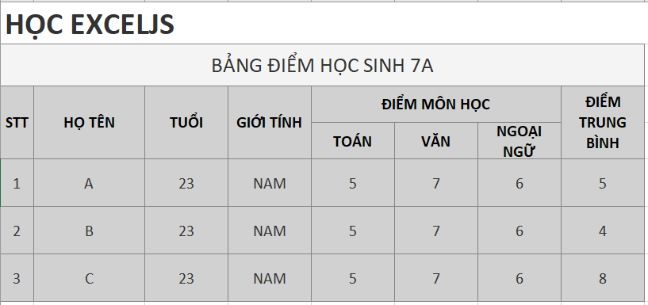
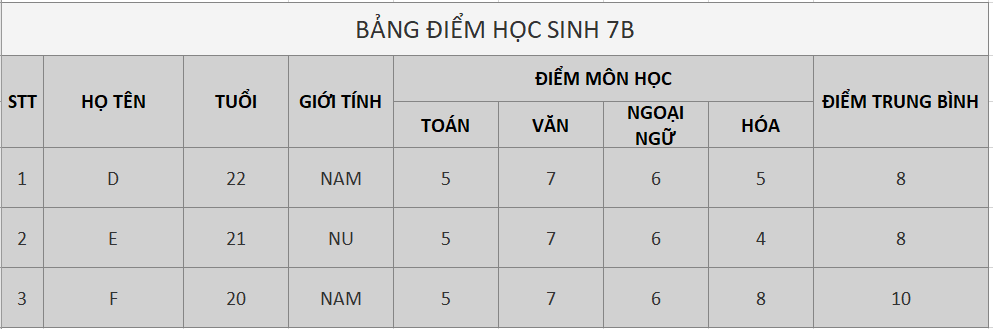
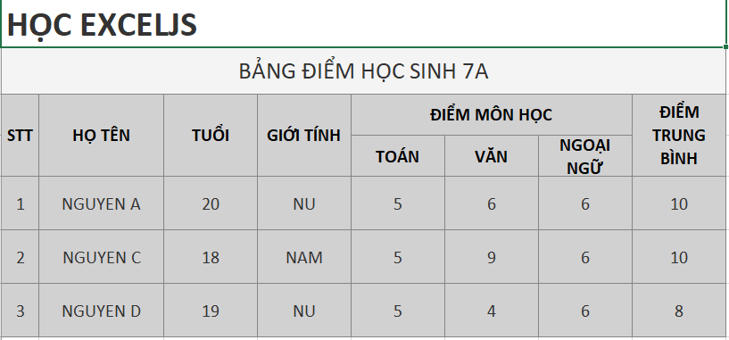

ẢNH 1: BẢNG MẪU<br>
<br>
<br>
<button (click)="generateExcel()" class="btn btn-success">Xuất file excel có 2 table nối tiếp trong 1 sheet
</button><br><br>
Chọn file excel có template mẫu:<div style="border: 2px solid rgb(158, 172, 158); width: 400px;"><input type="file"
                (change)="uploadFile($event)">
</div><br>
ẢNH 2: BẢNG THAY THẾ <br>
<br>
<button class="btn btn-primary" (click)="exportExcelOverrive()">Nhấn vào để ghi đè data mới lên template mẫu và xuất ra
        file </button>